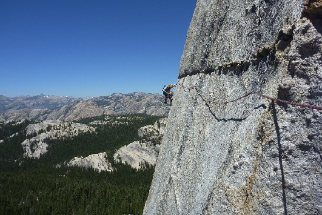
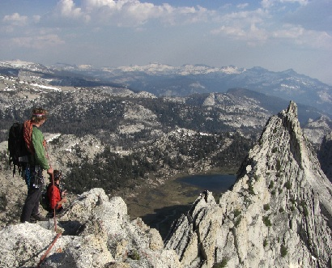
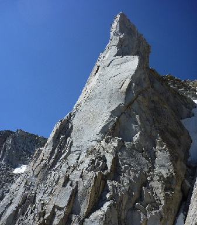
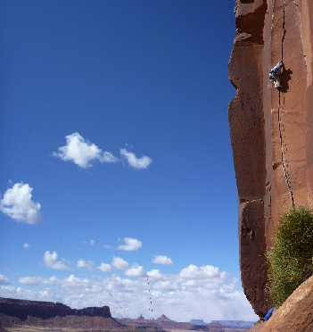
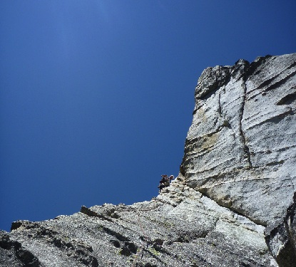
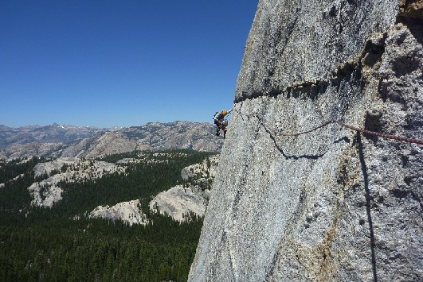
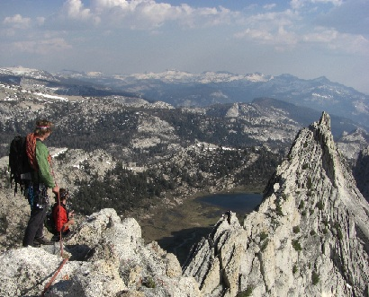
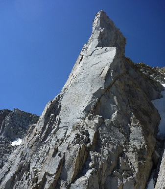
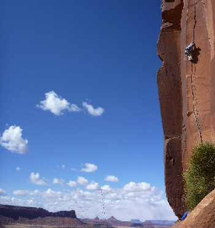
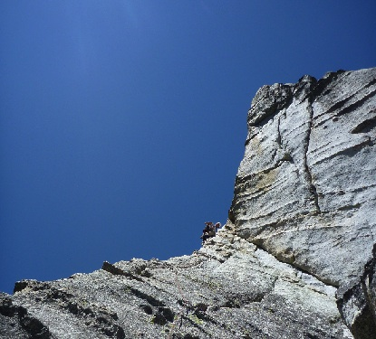

The Basics
Default Settings
 









This is the ImgWheel plugin in it's most basic implementation. Scrolling is controlled by hovering over either side of the image display. The width of the display is set to 100% by default. The display and image sizes are responsive. If images included in the .image-container div are enclosed in an anchor tag, that link will only be active when an image is in the central position.
Example JavaScript
$('#my-slideshow').ImgWheel();
Setting the Display Size
Proportional, responsive width
Fixed width
When relative widths are used to size an ImgWheel container (i.e. width specified as a percent) the size of the images will change responsively when the browser window is resized. If a fixed width is used, this responsiveness is lost. The first container's displayWidth setting is set to '50%', while the second container's displayWidth is set to '400px'. Resize your browser window to see the difference.
Example JavaScript
$('#my-slideshow_1').ImgWheel({displayWidth: '50%'});
$('#my-slideshow_2').ImgWheel({displayWidth: '400px'});
Scroll Animation Speed Settings
One speed and one delay, regardless of cursor position
One speed, variable delay
Variable speed, variable delay
Four properties combine to control the speed of the scrolling animation. The animation speed settings (animateSpeedMax and animateSpeedMin) set how fast an image will transition from one position to the next. This is the time that the images are 'in motion'. The reason there are two settings, a max and a min, is that the speed will change based on the user's mouse position. When the user mouses toward the outside of the display, the speed throttles up toward the maximum setting; when the mouse moves in toward the middle of the display, the speed decreases toward the minimum setting. You are setting the range of possible animation speeds when you specify these two properties. That being said, if you don't want the animation to vary speed depending on cursor position, set the maximum and minimum equal to each other (as shown in the first example to the right).
The animation delay settings (delayMax and delayMin) control the total time it takes for one cycle of the transition animation to take place. The delay time encompasses the animation time, so in order for ImgWheel to work the specified delays must be equal to or greater than the specified animation times. Time for the minimum delay in excess of the animateSpeedMin setting will equal the time that an image pauses before moving onto the next position in the animation. Same with the maximum delay and the animateSpeedMax setting. In other words, if you set animateSpeedMin equal to delayMin, the images will not pause in a given location before moving on to the next location when the animation is moving at its slowest speed (when the user's cursor is near to the center of the display).
Confused yet? This is getting to be like trying to fly a toy helicopter! Don't worry, this is the only semi-complicated thing about ImgWheel. Take a look at the examples on the right and the sample JavaScript corresponding to each below
Example JavaScript
$('#my-slideshow_1').ImgWheel({animateSpeedMax: 1000, animateSpeedMin: 1000, delayMax: 1400, delayMin: 1400});
$('my-slideshow_2').ImgWheel({animateSpeedMax: 400, animateSpeedMin: 400, delayMax: 500, delayMin: 1750});
$('#my-slideshow_3').ImgWheel({animateSpeedMax: 200, animateSpeedMin: 3000, delayMax: 1000, delayMin: 3000});
Vertical Alignment of Images
The images in the scroll are vertically centered by default. This can be changed with the imgPlacement setting. Alternative options are 'top' or 'bottom'.
Example JavaScript
$('my-slideshow').ImgWheel({imgPlacement: 'bottom'});
Direction of Scrolling
When hovering on the left side of the display, the images will scroll to the right by default. This direction can be changed by setting direction to 'reverse'.
Example JavaScript
$('my-slideshow').ImgWheel({direction: 'reverse'});
Changing the Animation Trigger
There are two options for triggering the scrolling. The default is hovering on either side of the container (or touching either side of the container if touch is enabled on the user's device). The trigger can be changed to clicking by setting functionality to 'click'. When this setting is changed, hovering over the display shows directional arrows to either side. Clicking an arrow will cause the scroll to occur in the direction indicated. Again, the direction of this scroll is controlled with direction.
Example JavaScript
$('my-slideshow').ImgWheel({functionality: 'click'});
Apply Some Style
The images in the scrolling display can be styled with CSS just as you would any other image. But what if you want your central image to display differently from other images in the container? This can be controlled by styling the .everythingBut and .onlyCentral classes in your CSS file. As the names imply, the .everythingBut class is applied to any image in the scroll that is not currently the central image. The .onlyCentral class is applied only to the central image in the display. For instance, here the .everythingBut class is styled to have reduced opacity and the grayscale filter applied. The .onlyCentral class is styled to include a 1px, black border. If you want to include different styling for these classes for multiple instances of ImgWheel on one page, use the appropriate CSS selection techniques.
Example JavaScript
$('my-slideshow').ImgWheel();
Example CSS
.onlyCentral {
border: 1px solid black;
}
.everythingBut {
opacity: .6;
filter: grayscale(80%);
}
Display Related Content
Default Settings
Blue Sun
This is an indelible hand crack at Indian Creek. Make your way out to the Way Rambo Wall to check it out if you have the chance!
Cave Route
A harder-than-it-looks dihedral climb at Battle of the Bulge Buttress. Perfect for when the rain (or the sun) is pounding down.
The Fracture
A short, perfectly fractured finger crack at Sugarloaf, above Kyburz, CA. The crux is distinct and slippery!
On the Lamb
A unique horizontal route in the beautiful setting of Tuolumne. On Lamb Dome.
Matthes Crest
Perfect knife-edge ridge traversing that seems to go on and on, yet still leaves you wanting more. Great views of the Tuolumne backcountry.
Third Pillar of Dana
Beautiful granite pillar perched just to the east of the Sierra Crest, above Mono Lake in California. Fun climbing with an unforgettable last pitch.
Scarface
Perhaps the most picturesque of Indian Creek routes? The climbing isn't bad, either...
Traveler Buttress
One of the two "50 Classic" climbs located at Lover's Leap, in the vicinity of South Lake Tahoe, CA.
While the ImgWheel Plugin image scrolling is responsive and handy, what makes ImgWheel a little different from a lot of other carousel plugins is the ability to include a rotation of related content below the image display. Content related to an image will be displayed when that image is central in the container. This content could be as simple as a photo caption or as complicated as you like. Or you could leave this part out altogether. Up to you.
If you want to display related content, here's how it works. Make a second div within the tags that ImgWheel is targeting, and give it the class "article-container". Place as many <article>'s in this div as there are images in your .image-container div. Then add whatever content you want to each article. You can go style-crazy on the related content in your CSS file. Here it is with the default settings:
Example JavaScript
$('my-slideshow').ImgWheel();
Size and Position the Related Content
Blue Sun
This is an indelible hand crack at Indian Creek. Make your way out to the Way Rambo Wall to check it out if you have the chance!
Cave Route
A harder-than-it-looks dihedral climb at Battle of the Bulge Buttress. Perfect for when the rain (or the sun) is pounding down.
The Fracture
A short, perfectly fractured finger crack at Sugarloaf, above Kyburz, CA. The crux is distinct and slippery!
On the Lamb
A unique horizontal route in the beautiful setting of Tuolumne. On Lamb Dome.
Matthes Crest
Perfect knife-edge ridge traversing that seems to go on and on, yet still leaves you wanting more. Great views of the Tuolumne backcountry.
Third Pillar of Dana
Beautiful granite pillar perched just to the east of the Sierra Crest, above Mono Lake in California. Fun climbing with an unforgettable last pitch.
Scarface
Perhaps the most picturesque of Indian Creek routes? The climbing isn't bad, either...
Traveler Buttress
One of the two "50 Classic" climbs located at Lover's Leap, in the vicinity of South Lake Tahoe, CA.
The related content can be styled any way you like in your CSS file. To control the horizontal alignment and the width of this display, however, use the ImgWheel articleAlignment and articleWidth settings. This will ensure that the positioning of the related content, its width and height, and the height of the entire ImgWheel display will all be responsively resized on window resizing events. The articleAlignment setting has three options, 'center', 'left', or 'right', and is set to 'center' by default. This is the horizontal alignment with respect to the ImgWheel container. The articleWidth setting is 100% of the ImgWheel display by default. To keep the width responsive, the articleWidth should only be set using a percentage measure. Here the article container has its width set to 60% and its alignment set to the right.
Example JavaScript
$('my-slideshow').ImgWheel({articleWidth: '60%', articleAlignment: 'right'});
Include Static Content in the Display
Blue Sun
This is an indelible hand crack at Indian Creek. Make your way out to the Way Rambo Wall to check it out if you have the chance!
Cave Route
A harder-than-it-looks dihedral climb at Battle of the Bulge Buttress. Perfect for when the rain (or the sun) is pounding down.
The Fracture
A short, perfectly fractured finger crack at Sugarloaf, above Kyburz, CA. The crux is distinct and slippery!
On the Lamb
A unique horizontal route in the beautiful setting of Tuolumne. On Lamb Dome.
Matthes Crest
Perfect knife-edge ridge traversing that seems to go on and on, yet still leaves you wanting more. Great views of the Tuolumne backcountry.
Third Pillar of Dana
Beautiful granite pillar perched just to the east of the Sierra Crest, above Mono Lake in California. Fun climbing with an unforgettable last pitch.
Scarface
Perhaps the most picturesque of Indian Creek routes? The climbing isn't bad, either...
Traveler Buttress
One of the two "50 Classic" climbs located at Lover's Leap, in the vicinity of South Lake Tahoe, CA.
DISCLAIMER
Rock climbing is dangerous. ImgWheel does not endorse climbing as a recreational activity. Just kidding!
What if you want to include some kind of static sidebar or display description in your ImgWheel display alongside of the dynamically-displayed related content? Go for it! The ImgWheel plugin is set-up to size its display based not only on <article>'s included in the .article-container div, but also on the heights of any other div's included in the div targeted by ImgWheel. These div's would be placed in the targeted div. Vertical placement is automatically set for display below the image container, even with the related content display. Width and horizontal alignment can be set in your CSS file. Here the static content has been placed in a div with id of "static-content". The div is set to 35% width and is placed on the right. The articles are aligned to the left with width 60%.
Example JavaScript
$('my-slideshow').ImgWheel({articleWidth: '60%', articleAlignment: 'left'});
Example CSS
#static-content {
position: absolute;
width: 35%;
right: 0px;
border: 1px solid black;
margin-top: 15px;
}